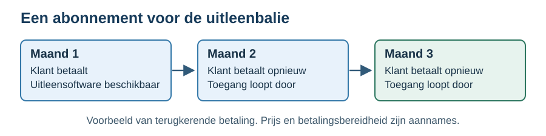
Wat is het? Bij een abonnement betaalt een klant regelmatig, bijvoorbeeld per maand of per jaar.
Waarom hebben we het nodig? Het is een mogelijke manier voor een aanbieder om inkomsten te krijgen zolang klanten de dienst gebruiken.
Hoe werkt het bij B01? Het verhuurbedrijf zou maandelijks kunnen betalen voor het gebruik van de uitleensoftware. De prijs en betalingsbereidheid zijn aannames.
Bron of praktische hulp: Prijzen van Rentman en prijzen van Booqable.
Theorie. Een API is een afspraak over de aanvragen en antwoorden die onderdelen van software kunnen gebruiken.
Toepassing bij B01. Een testprogramma vraagt de voorraad op met GET en stuurt een POST om uitlenen aan te vragen. De antwoorden zijn JSON. De gewone B01-knoppen gebruiken geen HTTP-aanvraag, maar roepen functies in Apps Script aan. Bekijk het overzicht van GET en POST. Bron over aanvragen en antwoorden: MDN.
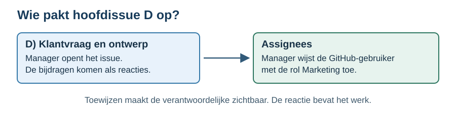
Assignees laat zien wie het werk oppakt. Open in jullie repository Issues, kies bijvoorbeeld D en klik rechts op Assignees. Kies de GitHub-gebruikersnaam van degene die de afgesproken actie oppakt als je schrijfrechten hebt. Gebruik een afzonderlijke issue-reactie voor je inhoudelijke bijdrage. Bron: GitHub Docs over Assignees.
Wat beslist het programma? De backend ontvangt de vraag, leest de gegevens en voert de regel uit. In de huidige B01-casus geeft de regel bij voorraad 0 de melding Niet beschikbaar en verandert de voorraad niet. Volg die regel in de Apps Script-code of bekijk de proef zonder scherm.
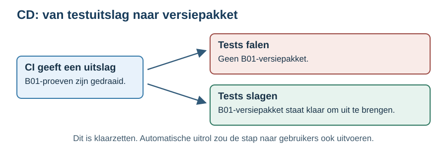
Wat is het? Continuous Delivery betekent dat een gecontroleerde versie klaarstaat om uit te brengen. Bij Continuous Deployment gaat een versie na geslaagde controles automatisch naar gebruikers.
Waarom hebben we het nodig? Gecontroleerd uitbrengen en de werking volgen kunnen de kans op problemen verminderen. Tests vinden niet alle fouten. De NOS-bron over de storing laat niet zien dat CD die had voorkomen.
Hoe werkt het bij B01? Na geslaagde tests maakt de workflow een downloadbaar versiepakket. De rode CD-run faalde en maakte geen pakket. De groene CD-run slaagde en leverde het B01-versiepakket.
Bron of praktische hulp: Nikki Siapno over CI/CD en Corepunk: aankondiging van de reset.
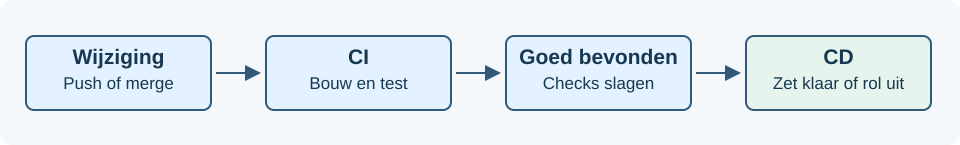
CI/CD combineert automatisch controleren met gecontroleerd klaarzetten of uitbrengen. Lees hieronder over CI en ga daarna naar CD.
Wat is het? Continuous Integration (CI) betekent dat je wijzigingen regelmatig samenvoegt en automatisch controleert.
Waarom hebben we het nodig? Tests kunnen snel melden dat een wijziging iets stukmaakt. Op 11 november 2026 waren meerdere overheidssites korte tijd onbereikbaar. Dat laat zien hoe belangrijk bereikbare software is. De bron laat niet zien dat CI deze storing had voorkomen.
Hoe werkt het bij B01? Na een wijziging controleert CI of uitlenen bij voorraad 1 lukt en bij 0 wordt geweigerd. Bekijk de rode run met een verkeerde verwachting en de groene run na herstel.
Bron of praktische hulp: NOS, 11 november 2026, Meerdere websites van de overheid korte tijd onbereikbaar, oorzaak onbekend en Nikki Siapno over CI/CD (Engels).
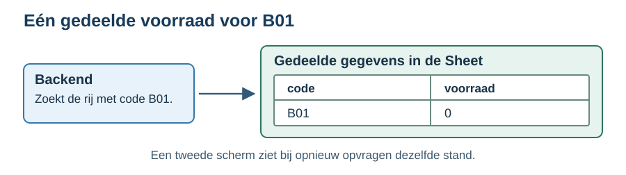
Wat is het? Een database bewaart gegevens zodat je ze later kunt opvragen of wijzigen.
Waarom hebben we het nodig? Het programma kan onthouden wat de huidige voorraad is.
Hoe werkt het bij B01? De database bewaart bijvoorbeeld de code B01 en de voorraad. Een Google Sheet kan hiervoor dienen.
Praktische hulp: Bekijk hoe je de gezamenlijke voorraad in een Sheet zet.
Wat ziet de gebruiker? De frontend is het scherm waarmee de gebruiker werkt. Bij B01 kiest die Uitlenen en ziet die de melding en de nieuwe voorraad. Bekijk de eerste Product-versie bij issue F.
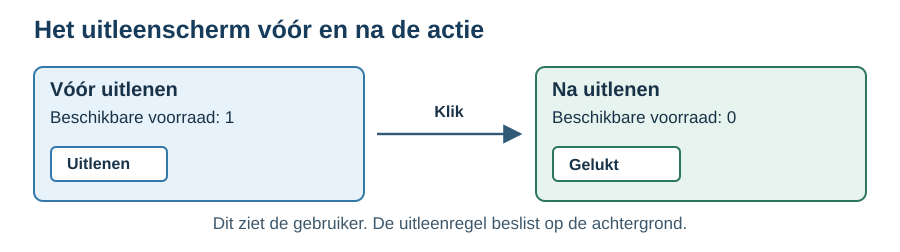
Wat is het? Een productfunctie helpt een gebruiker een taak uit te voeren. Een programmeerfunctie voert een taak uit met gegevens.
Waarom hebben we het nodig? Een functie maakt duidelijk wat de gebruiker kan doen en hoe het programma daarop reageert.
Hoe werkt het bij B01? Een leerling vraagt een bal. De functie controleert de voorraad en geeft antwoord.
Bron of praktische hulp: Cofian, Procesmanagement en MDN, Functions (Engels).
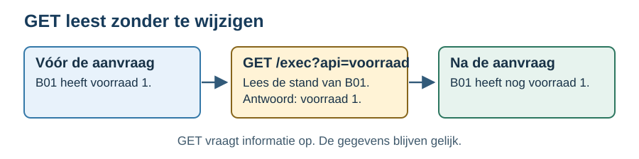
Theorie. Met GET vraag je gegevens op. De aanvrager vraagt om informatie, zoals de actuele voorraad.
Toepassing bij B01. GET leest de stand zonder die te veranderen. Bekijk de GET-aanvraag.
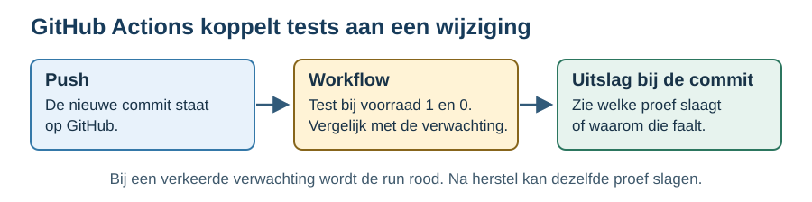
Wat is het? GitHub Actions voert een afgesproken reeks stappen automatisch uit.
Waarom hebben we het nodig? Het kan herhaald werk uitvoeren en de uitkomst tonen. Het is een hulpmiddel voor CI-controles en kan ook stappen bij CD uitvoeren.
Hoe werkt het bij B01? GitHub Actions voert de bestaande B01-tests uit. De rode workflow toont een bewust verkeerde verwachting. Na herstel laat de groene workflow zien dat de tests slagen. Zo koppelt GitHub Actions een codewijziging aan de controles van CI.
Bron of praktische hulp: GitHub Docs: GitHub Actions begrijpen (Engels).
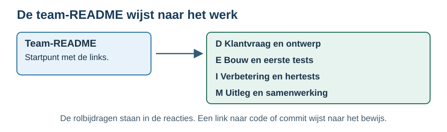
Wat is het? In een repository staan projectbestanden en de geschiedenis van wijzigingen. Met een Issue bespreek je werk. Een commit bewaart een wijziging.
Waarom hebben we het nodig? Teamleden werken samen in D, E, I en M. Zet elke bijdrage in het hoofdissue van de fase. De team-README linkt naar de hoofdissues.
Hoe werkt het bij B01? Het team plaatst ontwerp en testverwachtingen als reacties onder D, eerste uitkomsten onder E en wijziging en hertests onder I. De team-README linkt naar D, E, I en M.
Bron of praktische hulp: GitHub Docs: werken met Issues (Engels) en start bij A.
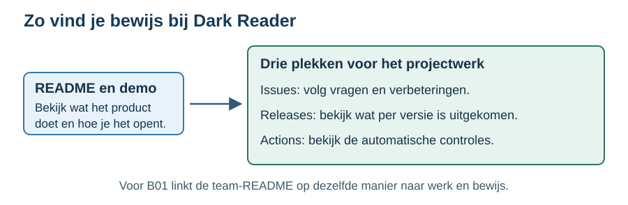
Dark Reader is een open-source browseruitbreiding. Bekijk hoe een bestaand project zijn gebruikservaring, werkafspraken en versies uitlegt. Gebruik dit als voorbeeld van professioneel projectwerk, niet als extra eis voor SE 2.
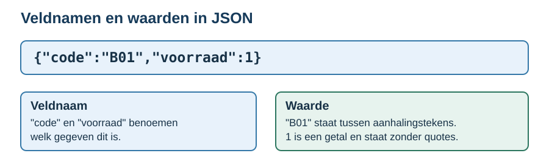
Theorie. JSON is een vaste tekstvorm voor het uitwisselen van gegevens. Een object heeft veldnamen en waarden.
Toepassing bij B01. In {"code":"B01","voorraad":1} is code de veldnaam voor het balletje en staat bij voorraad het getal 1.
{"code":"B01","voorraad":1}
code
voorraad
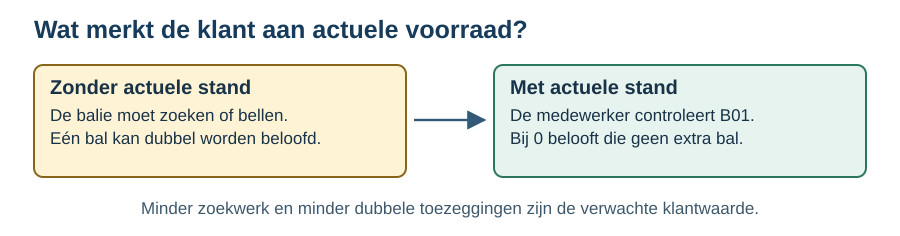
Wat is het? Klantwaarde is het nut van een oplossing voor een klant.
Waarom hebben we het nodig? Een klant wil weten welk probleem kleiner wordt en wat de oplossing oplevert.
Hoe werkt het bij B01? Een extern verhuurbedrijf kan sneller zien of een balletje beschikbaar is. Actuele gegevens kunnen zoekwerk en reserveringsfouten verminderen. Betrouwbare updates helpen de software bruikbaar te houden. Dat kan een reden zijn om ervoor te betalen. Meer over verdienmodel en abonnement.
Bron of praktische hulp: Booqable: voorraadbeheer en Rentman: materiaalverhuur.
Theorie van Goldratt. Een knelpunt is wat jullie team op dit moment het meest tegenhoudt. Pak dat eerst aan. Zo help je het werk dat daarop wacht verder.
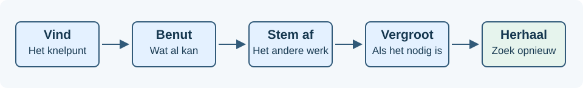
Toepassing bij B01. Kwaliteit kan de proef bij voorraad 0 al voorbereiden. Om die af te maken, moet Product eerst zeggen welke melding en voorraad worden verwacht.
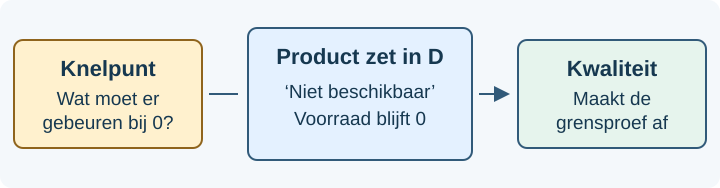
Probeer het bij A. Zet in je eigen reactie wat vastloopt, wie de volgende stap oppakt en wat die gaat doen.
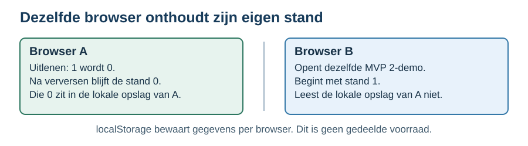
Wat is het? localStorage bewaart gegevens in één browser.
Waarom hebben we het nodig? Het is handig om een demo na verversen dezelfde stand te laten tonen.
Hoe werkt het bij B01? In MVP 2 blijft de voorraad in jouw browser staan. Dat is geen gedeelde voorraad: een andere browser of apparaat ziet die stand niet. Voor één gezamenlijke stand is een database nodig.
Bron of praktische hulp: Probeer MVP 2.
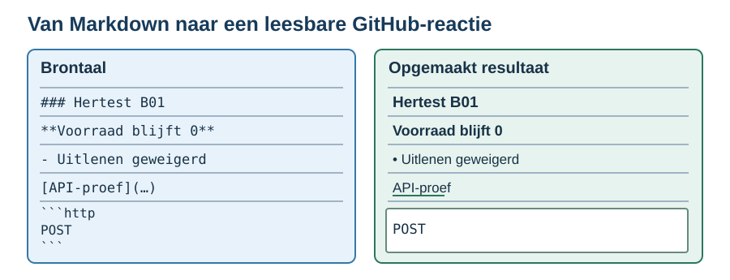
Theorie. Markdown is tekst met opmaaktekens. Zet hekjes en een spatie vóór een kop. Zet twee sterretjes aan elke kant van vette tekst. Begin een lijstpunt met een streepje en een spatie. Zet een linktekst tussen blokhaken en het adres tussen ronde haken. Zet drie backticks op de regel vóór en na een codeblok.
Toepassing bij B01. Kwaliteit kan deze hertest onder Issue I plaatsen. Vergelijk wat je typt met de weergave. Open in GitHub het tabblad Preview om de opmaak van je reactie te bekijken.
### Hertest B01 **Startvoorraad: 0** - Probeer B01 uit te lenen. - Voorraad blijft **0**. - Melding: Niet beschikbaar. [API-proef](b01.html#api-post) Aanvraag voor de hertest: ``` POST /exec { "code": "B01", "actie": "uitlenen" } ```
Startvoorraad: 0
API-proef
Aanvraag voor de hertest:
POST /exec { "code": "B01", "actie": "uitlenen" }
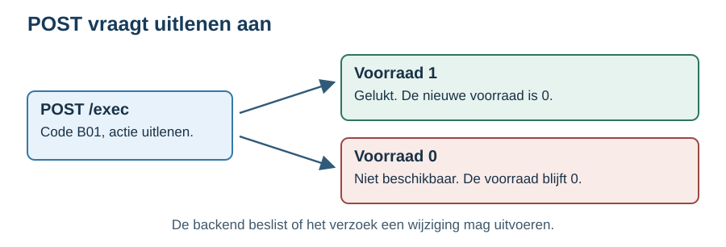
Theorie. Met POST stuur je gegevens naar de server om te verwerken. De backend bepaalt welke handeling is toegestaan. Als de aanvraag JSON bevat, vermeldt de header Content-Type: application/json hoe de backend de inhoud moet lezen.
Content-Type: application/json
Toepassing bij B01. POST geeft uitlenen of terugbrengen door. Alleen bij een toegestane handeling verandert de voorraad. Bekijk de POST-aanvraag.
Theorie. Gebruik vijf leerstappen om bestaande code te leren begrijpen voordat je zelf iets maakt.
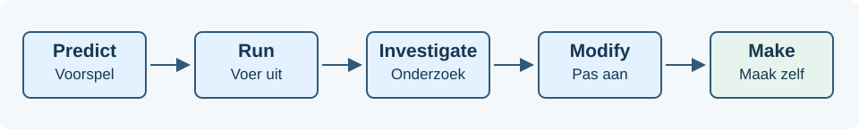
Toepassing bij B01. Voorspel wat B01 doet bij voorraad 0. Voer de proef uit, zoek de regel, verander één ding en maak daarna een variant voor je eigen project.
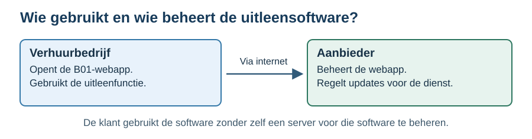
Wat is het? SaaS betekent Software as a Service: software die je via internet als dienst gebruikt. De aanbieder beheert de dienst.
Waarom hebben we het nodig? Een klant kan de dienst gebruiken zonder zelf een server voor de software te beheren.
Hoe werkt het bij B01? Een verhuurbedrijf zou de uitleenfunctie online kunnen gebruiken, terwijl de aanbieder de software beheert.
Bron of praktische hulp: Rentman beschrijft zijn dienst als SaaS (Engels).
Theorie. Softwarearchitectuur beschrijft uit welke onderdelen een systeem bestaat en hoe die samenwerken. In dit voorbeeld bedient de gebruiker de frontend. De API legt vast hoe de frontend en backend berichten uitwisselen. De backend past de regels toe en gebruikt de database voor gegevens.
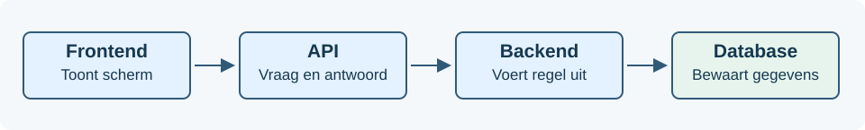
Integratie betekent dat je losse onderdelen laat samenwerken. Spreek af wat het ene onderdeel stuurt, wat het andere teruggeeft en wie een fout afhandelt.
Aansluitafspraak bij B01. De knop Uitlenen stuurt de code B01 en de actie uitlenen. De regel controleert de voorraad in de Sheet en geeft de melding en nieuwe voorraad terug. Bij voorraad 0 geeft de regel ‘Niet beschikbaar’ terug en blijft de voorraad 0. Product verwerkt de weigering in de regel en zorgt dat het scherm de melding toont. Bekijk de afspraak bij E en de eerste versie bij F.
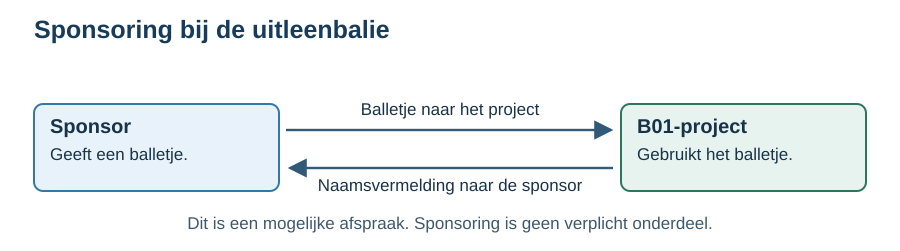
Wat is het? Bij sponsoring geeft een organisatie geld, spullen of diensten. Daar kan iets tegenover staan, zoals naamsbekendheid.
Waarom hebben we het nodig? Sponsoring kan een project helpen betalen. Maak duidelijk wat de sponsor terugkrijgt.
Hoe werkt het bij B01? Een mogelijke sponsor geeft bijvoorbeeld een balletje. In ruil krijgt de sponsor naamsvermelding. Dit is een voorbeeld, geen verplichting.
Bron of praktische hulp: Hoofdissue D.
Wat is het? Bij testen vergelijk je wat je verwacht met wat er echt gebeurt.
Waarom hebben we het nodig? Tests helpen fouten vinden en laten zien of een verbetering werkt.
Zo test je. Zet de beginstand klaar, doe de handeling en vergelijk wat je verwacht met wat je ziet. Zet voor elke hertest dezelfde beginstand terug.
Hoe werkt het bij B01? Bij voorraad 1 lukt uitlenen. Voorraad 0 is het grensgeval: een extra uitlening moet worden geweigerd en de voorraad moet op 0 blijven. Noteer beide uitkomsten, verbeter één punt en test beide situaties opnieuw. Zie Testplan, Eerste tests en Hertests.
Bron of praktische hulp: B01-tests, met een geslaagde controle en een bewust falende verwachting.
Theorie. Links werk je eisen en ontwerp uit. Onderin bouw je de oplossing. Rechts test je per niveau of de oplossing voldoet aan wat links is vastgelegd.
Toepassing bij B01. Leg vóór het bouwen vast dat bij 0 uitlenen niet lukt. Test na het bouwen de regel afzonderlijk en controleer daarna of de gebruiker de juiste melding ziet. Bekijk de testnotitie.
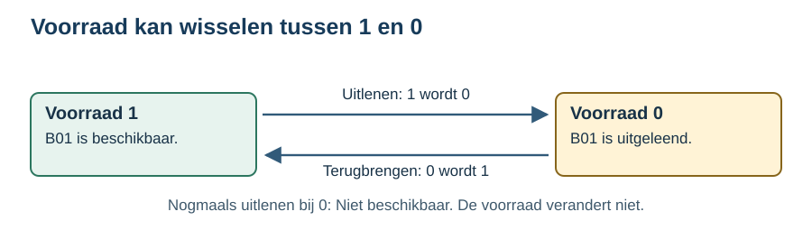
Wat is het? Een toestand beschrijft wat op dit moment waar is. Door een actie kan die veranderen.
Waarom hebben we het nodig? Als gegevens veranderen, moet het programma de juiste nieuwe toestand onthouden. Anders kan het verkeerde antwoorden geven.
Hoe werkt het bij B01? De voorraad is 1 als het balletje beschikbaar is. Na uitlenen is de voorraad 0. Terugbrengen maakt de voorraad weer 1. De functie moet ook weten wat er gebeurt als iemand probeert te lenen bij voorraad 0.
Ook in ARC Raiders veranderen gegevens als spelers spullen verplaatsen. De makers herstelden een fout waarbij spullen op een verkeerde plek terechtkwamen. Corepunk kondigde een reset van de spelwereld vooraf aan.
Bron of praktische hulp: ARC Raiders: update 1.47.0 en Corepunk: aankondiging van de reset.
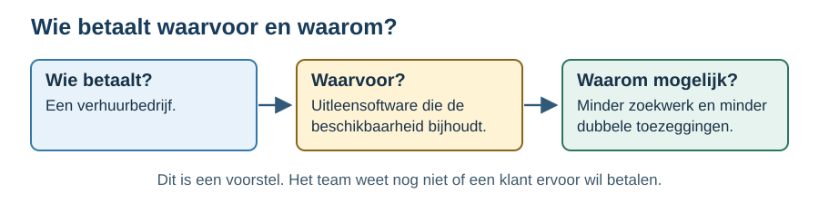
Wat is het? Een verdienmodel legt uit hoe een organisatie inkomsten krijgt.
Waarom hebben we het nodig? Zo wordt duidelijk wie betaalt, waarvoor en waarom de opbrengst voor die klant de prijs waard kan zijn.
Hoe werkt het bij B01? Een verhuurbedrijf zou kunnen betalen voor software die de beschikbaarheid bijhoudt. Of het bedrijf daarvoor wil betalen, is een aanname.
Bron of praktische hulp: Marketing vult bij J de klantwaarde aan in D.
Pas de begrippen uit het uitgewerkte voorbeeld toe op jullie project.